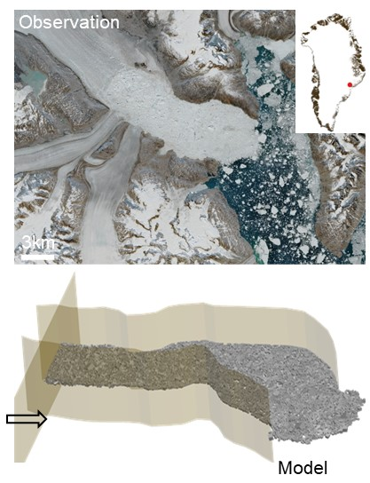

Ice-Ocean Interactions
Projections of sea level rise by 2100 can vary by 850 mm depending on the rate of iceberg calving at Greenland and Antarctic ice sheet margins (Pfeffer et al., 2008). Calving laws used in current ice-sheet models predict calving rates using empirically tuned strain rate or stress criteria, which is inadequate to capture the complex external interactions that modulate calving and are strongly coupled with the warming climate. In particular, how calving depends on ice-ocean interactions is poorly understood. Our group will leverage modeling and experimental capabilities to unravel the physics of ice-ocean interactions, which has crucial scientific and civil implications.
Recent Publications
-
 Seasonal Changes of Mélange Thickness Coincide With Greenland Calving Dynamics (Nature Communications, 2025)
Iceberg calving is a major contributor to Greenland’s ice mass loss. Ice mélange, tightly packed sea ice and icebergs, has been hypothesized to buttress the calving fronts. We develop the first three-dimensional discrete element model of mélange along with a simple analytical model to quantify the mélange buttressing using mélange thickness data from ArcticDEM over 32 Greenland glacier termini. We observed a strong seasonality in mélange thickness: thin mélange in summertime when terminus retreats, and thick mélange in wintertime when terminus advances. The observed seasonal changes of mélange thickness strongly coincide with observed Greenland calving dynamics and the modeled buttressing effects.